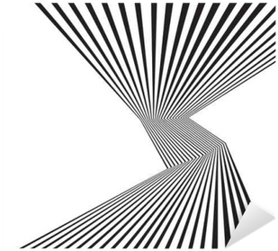

Abstract

syntax, which refers to the superficial appearances of code;
static semantics, which is a collective term for the static checks of code as performed in IDEs and language implementations;
dynamic semantics, which, in the context of this course, denotes the study of how programs behave; and
pragmatics, which is the evaluation of how language (construct) assists software developers in various tasks—
or fails to do so.
The Fall’25 semester instance of this course will illustrate these aspects with a careful study of (models of) JavaScript and TypeScript: how to understand the imperative core language, classes, objects, types, and the interaction between typed and untyped code fragments.
Project
The course work mostly consists of a series of approximately weekly homework problems that build on each other to yield a complete language implementation (of a model).
At the beginning of the semester, students will choose the programming language with which they wish to work on homework problems. Students will present their solutions to their peers during lecture time. The use of AI is acceptable as long as students can explain the resulting code and as long as they can build on this code from week to week.
Prerequisite
This course requires a thorough understanding of Fundamentals I and
Fundamentals II. Having taken an instance of Object-Oriented
Design during a regular semester provides an advantage, because it reinforces
the lessons of F II; a summer version of the course does not help.—
Students with exposure to several programming languages will get the most out of this course.